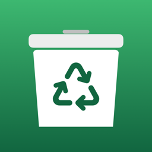

Containerkarte
Wertstoffcontainer in deiner Nähe finden
Kontakt
Fragen, Probleme oder Ideen? Schreib mir gern eine E-Mail an signorependejo@gmail.com. Ich antworte in der Regel innerhalb weniger Tage.
Hilfreich ist es, wenn du dein iPhone-Modell, die iOS-Version und eine kurze Beschreibung mitschickst.
Was kann die App?
- Zeigt Wertstoffcontainer auf einer Karte: Altglas, Altkleider, Papier, Verpackungen, Batterien, Elektrokleingeräte, Schuhe, Grünschnitt und mehr – dazu auf Wunsch auch Wertstoffhöfe.
- Filter nach Sorte, damit du nur siehst, was du gerade suchst.
- Details zu jedem Standort: was dort entsorgt werden kann, Betreiber und Öffnungszeiten (soweit bekannt).
- Route zum Container mit Apple Karten.
Häufige Fragen
Woher kommen die Daten?
Aus OpenStreetMap, der freien Weltkarte, die von Freiwilligen gepflegt wird. Die Standorte werden über die Overpass-Schnittstelle abgefragt. Die Daten stehen unter der Open Database License – © OpenStreetMap-Mitwirkende.
Ein Container fehlt oder ist falsch eingetragen.
Dann kannst du die Karte selbst verbessern: Tippe in der App auf einen Standort und wähle „Fehler melden / ergänzen“. Damit hinterlässt du auf openstreetmap.org einen Hinweis, den Mitwirkende vor Ort prüfen. Wer möchte, kann Container auch direkt in OpenStreetMap eintragen – nach einiger Zeit erscheinen sie dann in der App.
Es werden keine Container angezeigt.
Die App lädt Standorte erst, wenn du nah genug herangezoomt hast (etwa auf Stadtteil-Ebene). Steht unten „Zum Laden näher heranzoomen“, einfach weiter hineinzoomen. Erscheint eine Fehlermeldung, ist der OpenStreetMap-Server gerade ausgelastet – tippe nach einem Moment auf „Erneut“.
Braucht die App meinen Standort?
Nein, aber er ist praktisch: Mit Standort springt die Karte direkt zu dir. Ohne Standort kannst du die Karte frei verschieben. Der Standort wird nur auf deinem iPhone verwendet und nicht gespeichert.
Kostet die App etwas?
Nein. Es gibt keine Werbung, kein Konto und kein Tracking.